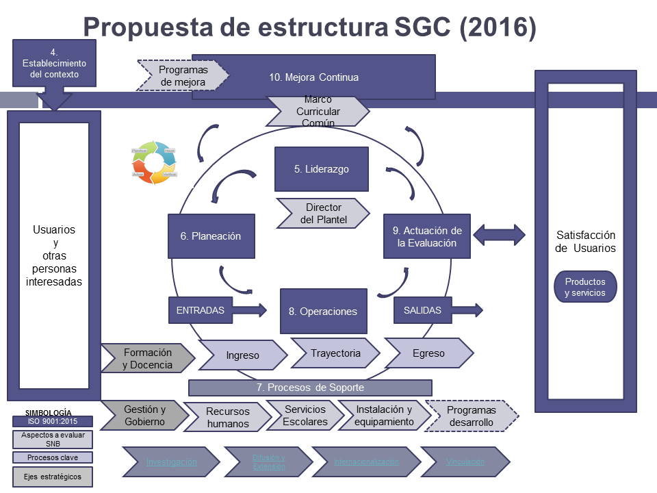

Sistema de Gestión de Calidad
Escuela Preparatoria No. 5
SGC
de la Prepa 5
Proyecto de remodelación del Sistema de Gestión de Calidad de la Escuela Preparatoria No. 5 de la Universidad de Guadalajara
Versión Beta 1
Sistema de Gestión de Calidad P5
Macroproceso
